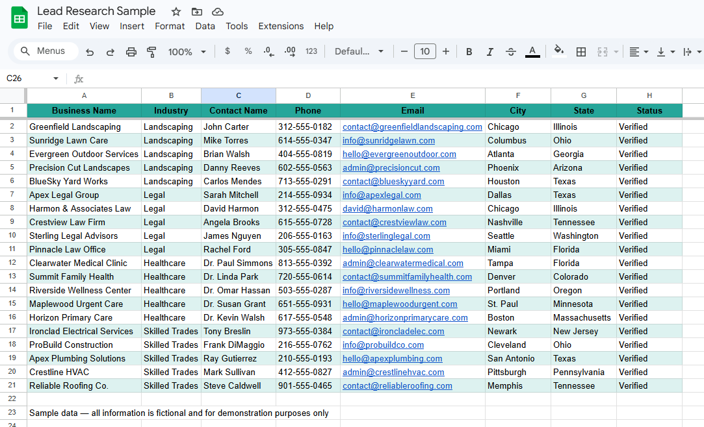

Work Samples
Real work from real projects — case studies, sample outputs, and demos. More projects being added as they're completed.
The team had no system for tracking patient files — work was getting lost, duplicated, and nobody knew what was done or what was next. I built a Google Sheets tracker on my own initiative to keep my own work organized. When the team saw it, they adopted it as their official system. The client then started requesting trackers for everything else.
This is a sample of the type of lead research output I deliver for clients. Each lead is sourced, verified, and organized into a clean, structured format ready for outreach or CRM import. Over 6 years I've consistently delivered 100+ verified leads per shift across US-based industries including legal, healthcare, skilled trades, and landscaping — maintaining accuracy and data integrity throughout.
📋 Lead Research Sample — Multi-Industry

Sample lead research output across 4 industries — Landscaping, Legal, Healthcare, and Skilled Trades. All information is fictional and for demonstration purposes only.
A dental practice runs school screening programs — providing checkups, prophy, fluoride, and sealant treatments across multiple schools. Parents and guardians fill out patient forms on-site. Those forms are scanned and uploaded to Dropbox. My job: open each scanned form and encode every patient record accurately into their proprietary dental software — zero errors, full confidentiality.
🔄 How the process works
I update this page as I finish new projects. You can also track my progress on the AI Journey tracker.
Get in touch